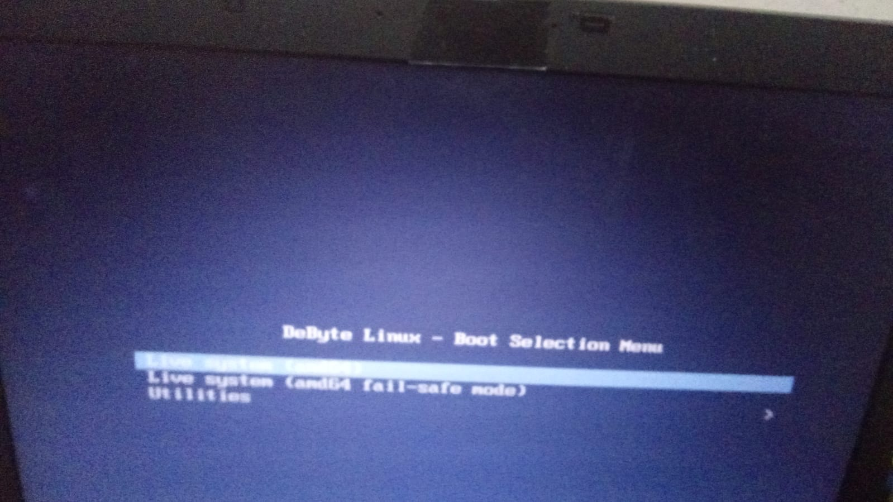
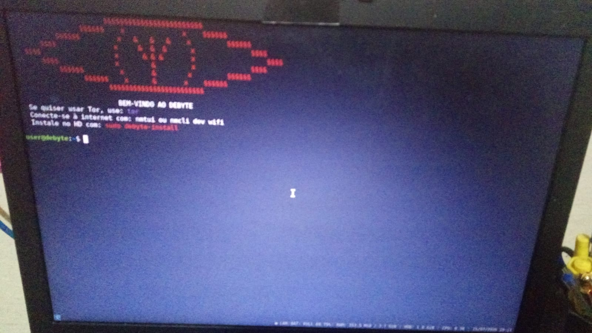
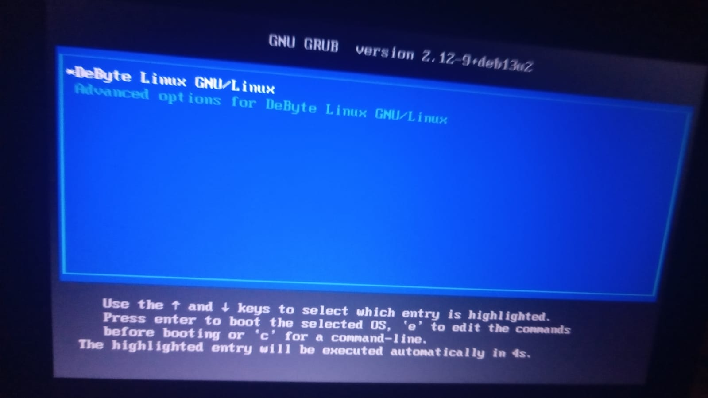
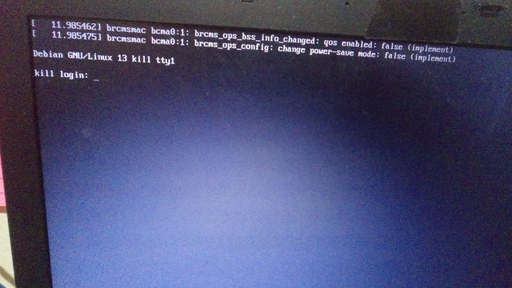
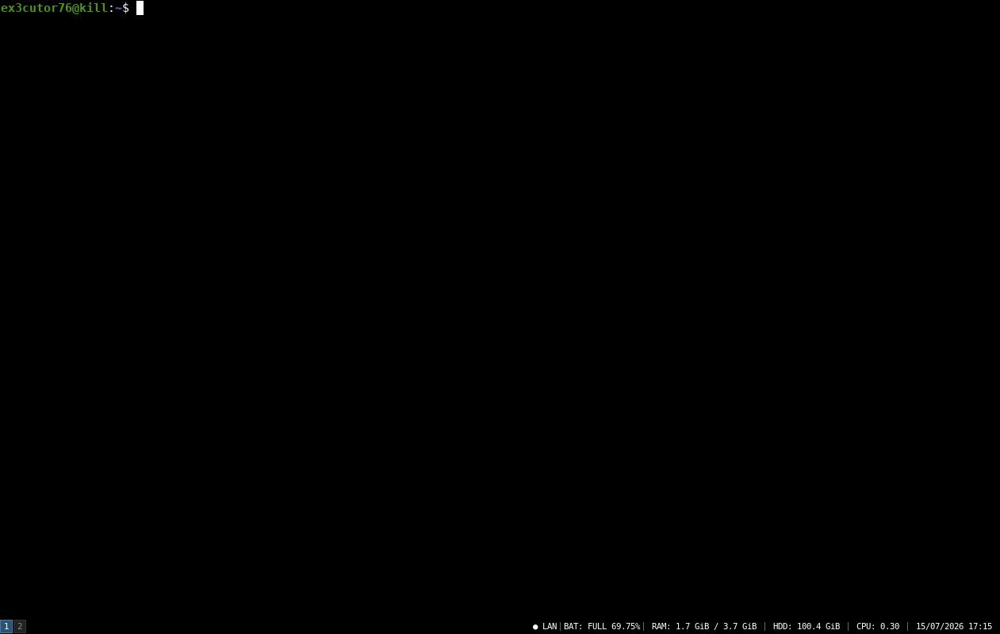
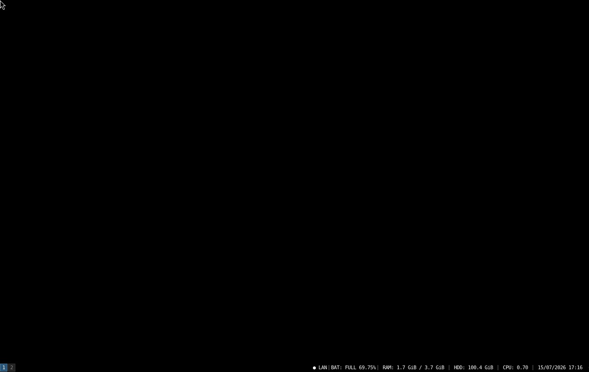
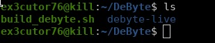
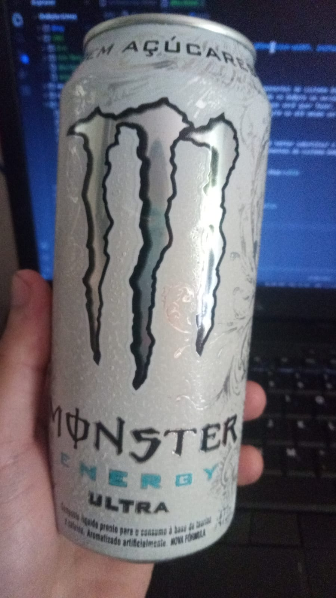
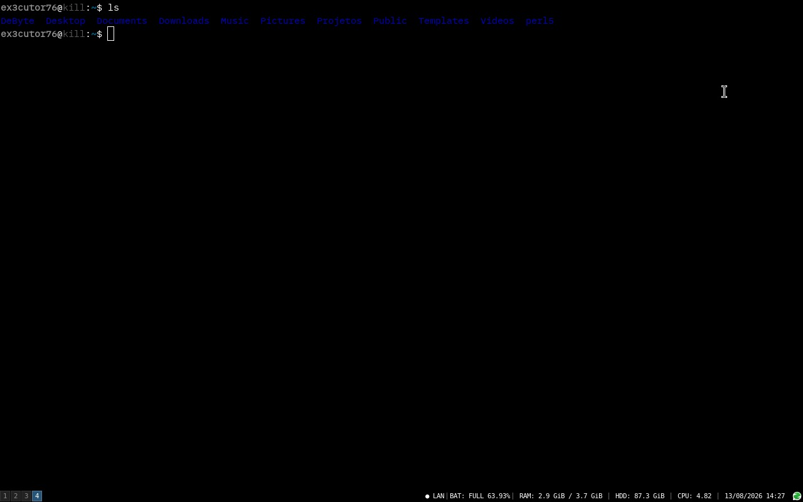

Imagens do projeto:
Aviso: Todos os testes foram feitos em um computador real.

Grub de Live System do DeByte Linux

Boas vindas do DeByte Linux (Modo Live System)

DeByte Linux, o grub após a instalação do DeByte Linux.

Login do DeByte, o TTY

A sua área de trabalho, o Terminator.

"O que existe antes do terminal?", a resposta é: Nada.

O começo do sistema, um script Shell.

O "café" do desenvolvedor.
